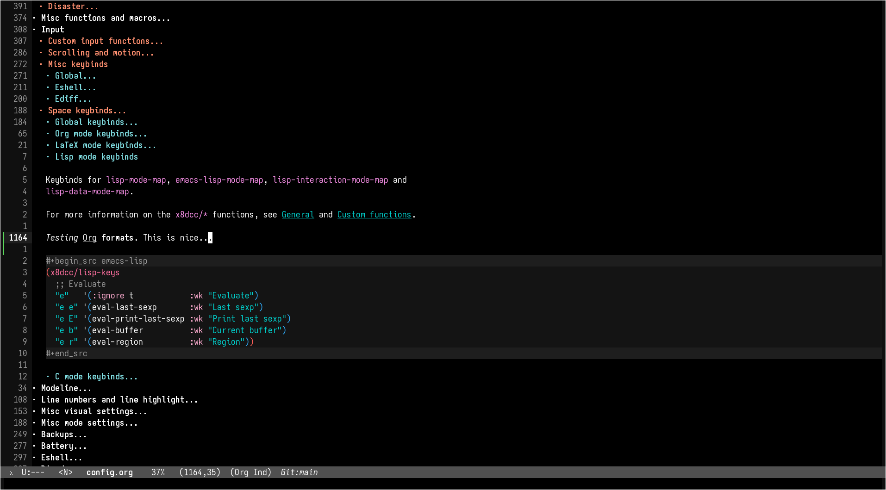
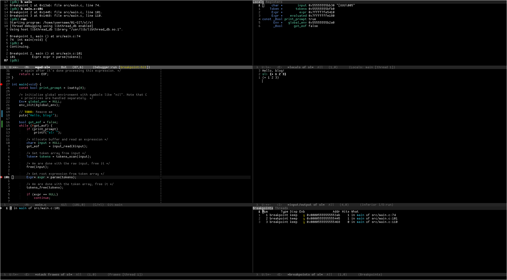
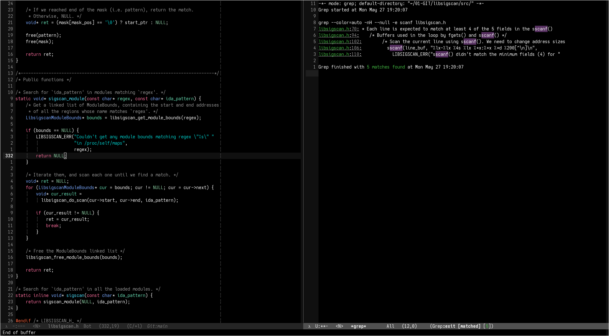
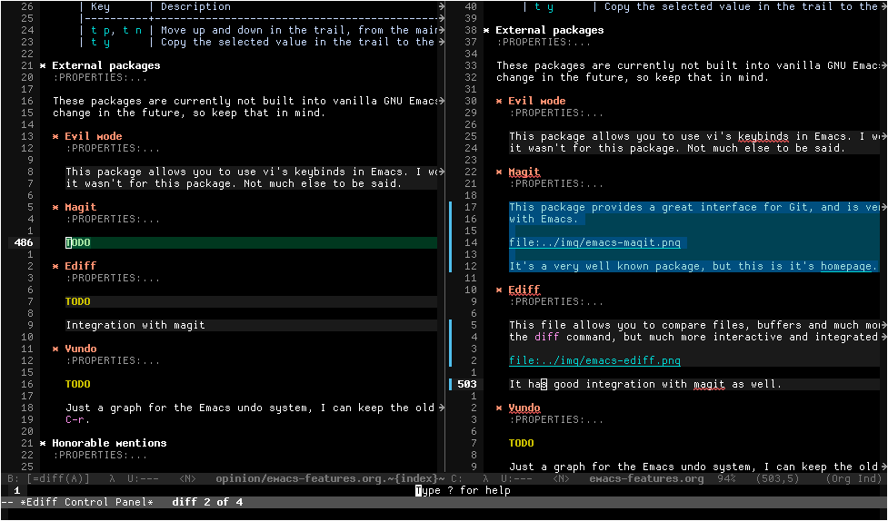
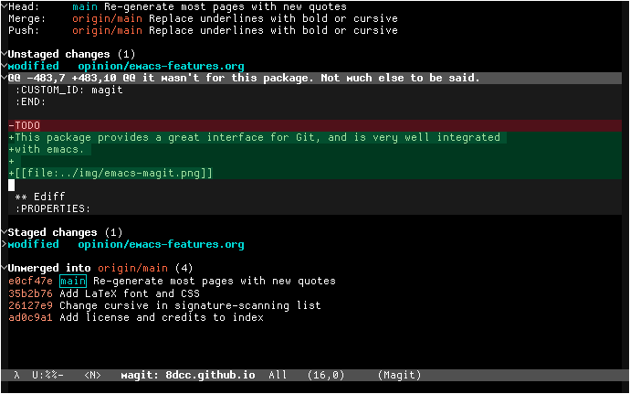

My favorite GNU/Emacs features
Table of Contents
1. Introduction
Emacs is an amazing editor. I come from neovim and I decided to try doom emacs some years ago, and decided to eventually switch to vanilla Emacs and customize it to my liking. I keep customizing more and more stuff in my dotfiles.
As you might have heard, Emacs is not a text editor, Emacs has a text editor. It has a lot of features, and it’s so easy to customize and extend that it creates an amazing environment for programming or general text editing.
With that in mind, let me say that Emacs is not really comparable to vi-like editors… Because they are just editors. They do one thing, and they do it really good: They let you edit text files, and very efficiently. Emacs is much more, which can save time but might also be an overkill for some people.
I decided to make a list of some of the Emacs features/packages I enjoy the most, mainly because I keep forgetting some stuff even exists. I am using GNU Emacs version 29.3, in GNU/Linux.
1.1. Quick note about vanilla keybinds
I don’t like the vanilla GNU Emacs keybinds. At all. I don’t know them and I don’t want to, even the most experienced Emacs users say they suck, and often change them.
I use evil mode, which allows vi-like keybinds. See Evil mode below.
See also RSI, Xah Lee’s RSI page and Xah Lee’s Emacs pinky page.
1.2. Quick note about keybind notation
The key notation used in the Emacs context is the following.
| Key | Description |
|---|---|
C- |
Press and hold the Control key |
M- |
Press and hold the Meta (Alt) key |
S- |
Press and hold the Shift key |
DEL |
Press the Backspace key, not the delete key |
RET |
Press the Return or Enter key |
SPC |
Press the Space bar |
ESC |
Press the Escape key |
TAB |
Press the Tab key |
For example:
C-M-s(or, equivalently,M-C-s): Press and hold both Control and Meta (Alt) keys while hitting the s key.SPC t c: Press Space, then t and finally c.M-x find-file RET: Press and hold Meta (Alt), hit the x key, type “ find-file ”, and press Return.
Note that M-x ... RET is a common pattern, since M-x opens the “execute command”
menu.
1.3. Small Emacs glossary
In case anyone is very new to Emacs, this list might help understanding the difference between some terms used in this page.
1.3.1. Frames, windows and buffers
These terms have other meanings in other contexts, so it’s normal to confuse these when starting with Emacs.
- Frame: Top-level Emacs display element. In the DE/WM context, this would be referred to as a “Window”, but this term has another meaning within Emacs.
- Window: Contained within a Frame. Basically, the splits in which your Frame is divided. Each Window contains a Buffer.
- Buffer: The actual content of a Window. It’s usually an interface between Emacs and a file, but it’s not always the case. You can have hundreds of them open, but you will probably be working with only a couple at a time through your Windows.
For more information and visual examples, see: EmacsWiki, smythp.com.
2. General design choices
2.1. GUI vs. Terminal
Emacs is a GUI program. It can be ran in a terminal, but you will be limiting its potential. The fact that Emacs has its own window has a lot of advantages over terminal editors like neovim.
For example, you can display inline images, open PDF files, change the font styles (without being limited by the terminal’s styles), change the fonts themselves for certain regions, etc.
2.2. Emacs Lisp
Emacs uses its own dialect of Lisp as its programming language: Emacs Lisp.
I started looking at Lisp languages because Richard Stallman, one of the creators of Emacs, recommended it in one of his talks. Then I found that Emacs is made in its own Lisp dialect.
Since using Emacs, specially since switching to vanilla, I have learned a lot about Lisp and functional programming, and I can say I don’t regret it one bit.
Even if you don’t use Emacs, check out the Lisp language family, you will learn a lot.
Another interesting part about Emacs Lisp is its self documentation. If you go to the Emacs manual website, you can read the following.
Emacs is the advanced, extensible, customizable, self-documenting editor.
They are not lying. Simply press C-h v and start typing a variable name to
display its documentation. You can also search for functions with C-h f.
See also: Emacs Lisp manual (PDF).
3. Built-in features
These packages are currently built into vanilla GNU Emacs, but this might not be the case in older versions, so keep that in mind.
3.1. Org mode
From the EmacsWiki:
Org-mode is an Emacs mode for note keeping, project planning, TODO lists and authoring. It is included from Emacs 22.1 onward as default.
Features:
- Outlines: headlines, TODO items, checklists, numbered lists, searching, filtering
- Filing: outlines, tagging, refiling, archiving, sorting, flexible enough to build a “getting things done” workflow
- Timestamp: deadlines, clocking in/out, scheduled items, repeating items, optionally integrated with emacs calendar and diary
- Markup: bold, italic, lists, links, images, math (via LaTeX), code highlighting
- Links to URLs, files, gnus, rmail, vm, news, wanderlust, bbdb, irc, shell commands, bookmarks, images, attachments
- Table: editing, spreadsheets, formulas
- Export: HTML, LaTeX, Markdown, iCalendar, OpenDocument, Beamer slides, PDF, and more via an extensible exporting system
- Babel: Literate programming, reproducible research, OrgModeSQL
- Agenda: Overview of scheduled and TODO items across files
It is an extremely useful markdown format, and it can be used for a variety of things. For example, this blog itself is written in Org, and it’s exported to HTML from within Emacs.
Org-mode can also be used for literate programming. Just like in other markdown formats, you can embed code blocks within Org files. The interesting part is that you can evaluate them from Emacs, and write their output to the same file, for example. Or you can choose to export the code blocks of your Org file to different sources, filtering by language. I use this for my emacs configuration, and it allows me to put the code snippets between the markdown text, rather than using very long plain comments within a single source.

See also: Org-mode manual.
3.2. GDB
Emacs has an excellent integration with the GNU Debugger, gdb. You can run M-x
gud-gdb, and you can get basically what you would get by running gdb on a
terminal.
The good part, however, is when you integrate gdb with your entire editor. Try
setting the following variables, and then running M-x gdb.
; Launch in the Many Windows layout. (setq gdb-many-windows t) ; Restore previous windows when GDB stops (setq gdb-restore-window-configuration-after-quit 'if-gdb-many-windows)
Behold, the beauty of GNU Emacs (at least since version 22.1).

All 6 windows have been opened by gdb, but don’t worry, your previous layout
will be restored when you quit out of gdb. Let’s briefly look at what each
window is doing:
- In the top left, you can see the
gud-gdbprompt you would get when simply runningM-x gud-gdb. From there, you can run your usualgdbcommands, likebreak,runandcontinue. - On the top right, you can see how your variables are updated in real time. You can also click on the “Registers” tab to switch to that view.
- On the middle left, you can see the source where the current instruction is, which obviously gets updated whenever your program jumps to an instruction in a different file.
- On the middle right, you can write the input and see the output of your program.
- On the bottom left, you can see the call stack of the instruction being debugged. You can click on each line to jump to that position.
- On the bottom right, you can see and interact with your breakpoints and threads. You can enable and disable breakpoints, jump at their positions in the code, etc.
If you look closely at the gud window, you can see that the third breakpoint was
added without a break command. That’s because you can click the fringes of
source buffers to add breakpoints on those lines. The red dots represent
breakpoints, and the gray arrow represents the current instruction. If you are
wondering about the green and blue lines, they show the git changes of the
current file.
Are you missing the assembly window? In that case, you have my respect. From the
gud window (top left), you can replace the source buffer (middle left) with the
assembly buffer by running M-x gdb-display-disassembly-buffer.
You messed the windows up? No problem, simply run M-x gdb-restore-windows.
3.3. Eshell
Eshell is a shell written in Emacs Lisp. It was added officially to Emacs 21.
When I first tried it, I didn’t like it, because it was a bit different from
other shells like vterm. The general feeling and some particular keybinds
(e.g. M-r instead of ^R for accessing the history) might feel weird at first,
but it’s really nice once you get the hang of it.
Since it’s a normal Emacs buffer, you can yank text, paste it, delete it, write
it anywhere, etc. Eshell allows you to re-run commands by pressing RET on a
previous line where it was called (by checking against the eshell-prompt-regex
variable). This also allows you to save the output of an eshell session into a
file, for example.
It’s capable of running Emacs Lisp code, and calling Emacs functions. So you can
not only call normal system programs, but you can also use, for example,
find-file a.txt to open a file in that window.
3.4. Dired
Dired, the Directory Editor, is the Emacs file manager. Dired has many useful features, but I will talk about the ones I use the most. Note that some of my keybinds come from Evil mode, but you can consult them in the Dired section of the Emacs manual.
- Marking
- You generally operate on files and directories by marking them with
m. If the region is active, all the selected files are marked. You can mark all items in the current buffer witht. You can unmark all items in the current buffer withU. - Navigation
You can move through the buffer with normal evil keys. You can go up to the parent directory with the
^key.You can add the contents of sub-directories into the current dired buffer with
I. If the sub-directory’s contents are already present in the buffer, theIcommand just moves to it. If the point is in a sub-diredtory, and the parent is in the same buffer, you can press^to move to the line where the current directory appears in the parent. You can remove a subdirectory withC-u KorM-x dired-kill-subdir.- General commands
You can flag files or directories for deletion with
d, and unflag them withu. You can delete all items flagged for deletion in the current buffer withx. You can also delete all marked files withD.You can copy files with
C, and rename/move them withR. You can change permissions withM, the user withOand the group withG. You can touch them withT. You can print files withP(usually withlpr). You can compress/uncompress them withZ(usually withgzip).You can create new directories with
+.- Search, replace and compare
You can search for regular expressions in marked files with
A. It’s a variant ofxref-find-references(in my config bound toSPC j x), so it displays an*xref*buffer (or a fancy completion, if overwritingxref-show-xrefs-functionwith something like consult).You can replace text (with
query-replace-regexp) in the marked buffers withQ. This is a very useful feature. If you exit the query replace loop, you can userin the*xref*buffer to continue replacing. If there are marked directories in the current buffer when invoking, they are searched recursively.You can compare two files (the file at point with a second prompted file) in a
*Diff*buffer with=.- Remote directories
- You can access remote files in Dired with the usual
/method:...syntax. See the Remote Files section of the Emacs manual. - Wdired
By default, Dired buffers are read-only. However, you can enable the Wdired mode with
M-x wdired-change-to-wdired-modeor withM-x read-only-mode. In this state you can rename files, move them by appending a path to the name, or mark them for deletion by deleting the whole name.This can be really useful with evil’s visual block (or the Emacs alternative, which I honestly don’t know).
3.5. Grep
You can run grep commands from within Emacs. The basic form is with M-x grep,
which simply runs a grep command (or a command with a similar output) and
displays the matches in an interactive buffer.

You can jump to each of those lines.
The M-x rgrep command is one of my favorites, because it allows you to grep for
a term recursively in the specified folder.
See also GNU Emacs Manual.
3.6. Compilation
In Emacs, you can run compilers and build tools, feeding the output into an Emacs buffer that can be used, for example, for jumping to the lines of errors and warnings inside the source buffer. See also Emacs manual.
With the projectile package, you can use the projectile-compile-project command
to compile (e.g. run make) from the root of your project, instead of running it
from the directory of the current buffer. The projectile package has many
similar commands, so make sure you check it out.
3.7. Ediff
This package allows you to compare files, buffers and much more. It’s similar to
the diff command, but much more interactive and integrated with Emacs and Magit.

3.8. Browser and external documentation
Emacs has many commands related to documentation, but one of the most useful
ones is man. It provides an interface for the man(1) command, and it can be used
to view manual pages for various commands and C functions, while working on your
main buffer. See also Emacs manual.
I decided to include in this section the Emacs browser, eww, since one of my main usages is for online documentation. The Emacs browser is not meant to be a replacement for modern standalone browsers, since it doesn’t have have support for CSS or JavaScript. However, if a website is built properly (e.g. this blog), you should be able to render it without issues.
Some time after initially writing this, I found a smart way to use eww that I
think it’s worth mentioning here. I wanted to save parts of different HTML files
hosted in a website into a file, so I thought of making a Python script with the
requests library that downloads each file, and then filter the section that I
was interested in. However, I haven’t used that library in a long time, so I
knew it would have taken a bit to get working (just for using it once). What I
did instead was open an empty buffer in Emacs, eww in another window, and record
the following macro (in my case with evil-record-macro):
- Search what I need to copy on the
ewwbuffer, and copy it. - Navigate to the next HTML file from a link in the website.
- Switch to the other buffer, and paste the website contents, along with whatever text I wanted to add afterwards.
3.9. ERC
ERC is a powerful IRC client for Emacs, and it’s included since version 22.3. I don’t have much to say about ERC, so I will just quote the list of features from the manual:
- Flood control.
- Timestamps.
- Join channels automatically.
- Buttonize URLs, nicknames, and other text.
- Wrap long lines.
- Highlight or remove IRC control characters.
- Highlight pals, fools, and other keywords.
- Detect netsplits.
- Complete nicknames and commands in a programmable fashion.
- Make displayed lines read-only.
- Input history.
- Track channel activity in the mode-line.
3.10. C macro expansion
Emacs allows you to expand C macros with M-x c-macro-expand. This is very useful
for complex and nested macros.
For example, if you had this C code:
#include <stdlib.h> #define MY_PATH "file.txt" #define MY_MACRO(X, Y) \ do { \ func(0x10, MY_PATH, NULL); \ } while (X++ < Y) MY_MACRO(i, 30);
You could select the last line and use M-x c-macro-expand to expand the macros
in the region recursively (in this case MY_MACRO, MY_PATH and NULL):
do { func(0x10, "file.txt", ((void*)0)); } while (i++ < 30);
Discovering this feature was a magical moment. I was writing a C program which
used some complex macros, so I wanted to make sure that they were expanding to
what I thought. I thought that someone could have made an Emacs package about
this, but then I typed M-x macro and saw that this is already a feature in
Emacs.
3.11. Calculator
You can open the Emacs calculator with M-x calc. It uses Reverse Polish Notation
(RPN), which might be a bit tricky to get used to, but it’s very worth it.
Some of the features include:
- Choice of algebraic or Reverse Polish notation (RPN), i.e. stack-based, entry of calculations.
- Arbitrary precision integers and floating-point numbers.
- Arithmetic on rational numbers, complex numbers (rectangular and polar), error forms with standard deviations, open and closed intervals, vectors and matrices, dates and times, infinities, sets, quantities with units, and algebraic formulas.
- Mathematical operations such as logarithms and trigonometric functions.
- Programmer’s features (bitwise operations, non-decimal numbers).
- Financial functions such as future value and internal rate of return.
- Number theoretical features such as prime factorization and arithmetic modulo m for any m.
- Algebraic manipulation features, including symbolic calculus.
- Moving data to and from regular editing buffers.
- Embedded mode for manipulating Calc formulas and data directly inside any editing buffer.
- Graphics using GNUPLOT, a versatile (and free) plotting program.
- Easy programming using keyboard macros, algebraic formulas, algebraic rewrite rules, or extended Emacs Lisp.
I don’t have a lot of experience with the calculator, but I can assure you that it’s worth learning. See also the calc manual.
3.11.1. Quick calculator
If you find this overwhelming, you might want to at least consider using
M-x quick-calc for quick (but not necesarily simple) calculations. For example:
M-x quick-calc RET Quick calc: 632+56-32*4+2^3 Result: 632 + 56 - 32 4 + 2^3 => 568 (16#238, 8#1070, 2#1000111000) M-x quick-calc RET Quick calc: 16#7F33 Result: 32563 => 32563 (16#7F33, 8#77463, 2#111111100110011) M-x quick-calc RET Quick calc: 3x=2x+18 Result: 3 x = 2 x + 18 => x = 18
3.11.2. Personal reference card
These are some keybinds that I use often, appart from the basic operations and insertion commands:
| Key | Description |
|---|---|
C-u + n |
Run the next command n times, edit n entries, etc. |
` (tilde) |
Edit the top of the stack (Combine with C-u). |
D r |
Change the radix used when displaying. |
Some other keybinds, related to the trail:
| Key | Description |
|---|---|
t p, t n |
Move up and down in the trail, from the main calc window. |
t y |
Copy the selected value in the trail to the main calc window. |
4. External packages
These packages are currently not built into vanilla GNU Emacs, but this might change in the future, so keep that in mind.
4.1. Evil mode
This package allows you to use vi’s keybinds in Emacs. I would not use Emacs if it wasn’t for this package. Not much else to be said. This is its GitHub repository.
4.2. Magit
This package provides a great interface for Git, and is very well integrated with Emacs.

It’s a very well known package, but this is it’s homepage.
4.3. Vundo
The Emacs undo system is great because, unlike many other editors, treats the
change history as a tree rather than a linear history. This makes it a bit
harder to get used to (tip: use undo-redo), but ensures that no change is lost.
The vundo package provides a (navigable) graph for the Emacs undo system.